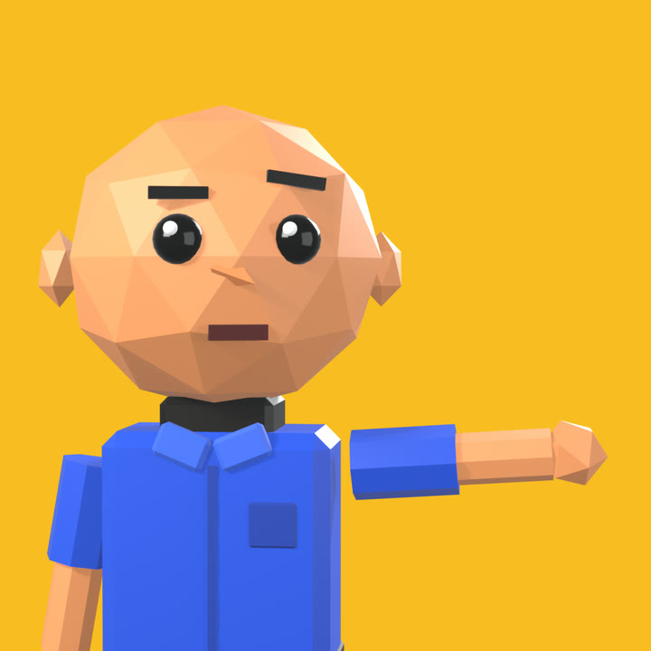
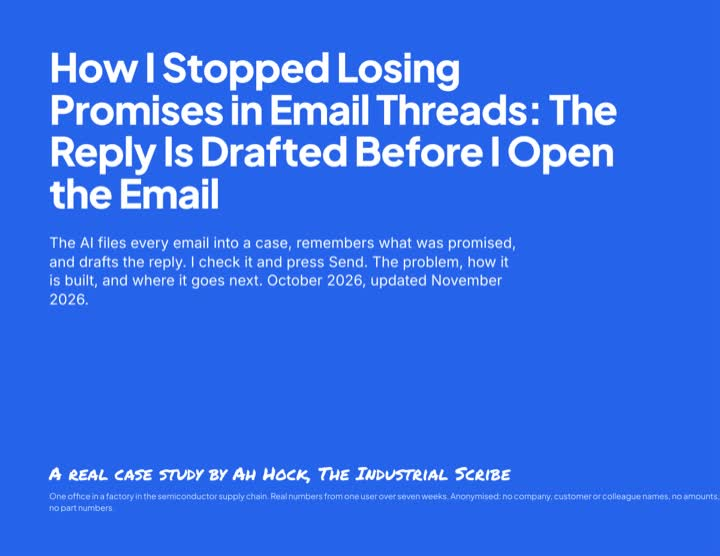

Bookmark this page. It is your download home for this study, and any corrected edition lands here free.

⬇ Download the PDF (28 pages, under 1 MB)How I Stopped Losing Promises in Email Threads: The Reply Is Drafted Before I Open the Email. The AI files every email into a case, remembers what was promised, and drafts the reply; I check it and press Send. Inside: the problem, the architecture pattern that solved it, how the work flows step by step, the six-test scorecard, and where it goes next. Real numbers from one user over seven weeks, from one office in a factory in the semiconductor supply chain. Anonymised: no company, customer or colleague names, no amounts, no part numbers.
Honest limits: the counts come from one person's desk, not from a study of many users. The reply-drafting part of this method is in the shop as the Email Intelligence Desk. The full Case Desk kit is being built; it is not in the shop yet and has no price.
Landscape pages, made to read on a laptop or a tablet. Please don't share the file publicly; this is one man's side project.
Stuck, or the file won't open? Reply to your purchase receipt. A human (me) answers, usually within a day.